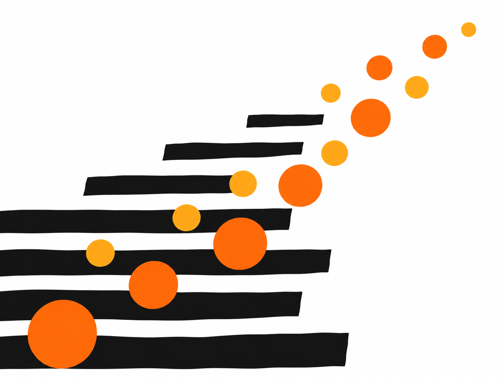
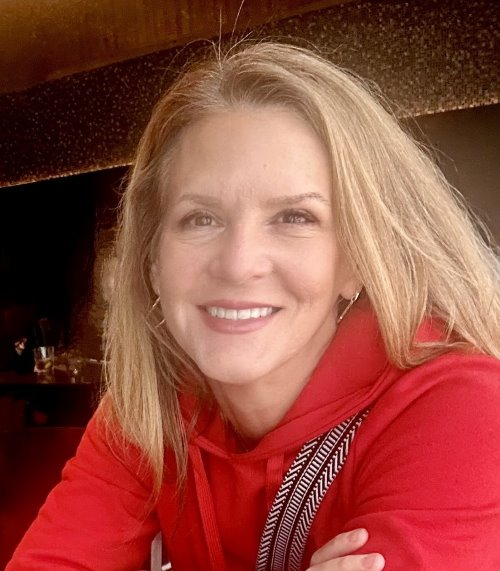

Essential patient services
Personal case navigation, biomarker report review, second-opinion referrals, and matching to clinical trials or expanded access.
Ask about patient servicesAn initiative of ICAN · International Cancer Advocacy Network
NRG1 Energizers connects people affected by NRG1 fusion-positive cancers with patient navigation, information, research opportunities, and community.

How we help
These areas are adapted from the current NRG1 Energizers website for layout testing. They are not new service announcements.
Personal case navigation, biomarker report review, second-opinion referrals, and matching to clinical trials or expanded access.
Ask about patient servicesHelp understanding molecular profiling, tumor-board options, patient registry participation, and the importance of RNA sequencing.
Connect with the teamMeet other patients and care partners, learn from webinars, and keep up with research and cancer conference developments.
Explore community effortsPatient-informed research initiatives, trial awareness, public-policy advocacy, and opportunities to help advance the field.
See focus areasBeyond individual support
NRG1 Energizers brings patient and care-partner perspectives into research conversations while helping people find each other and stay informed.
Visit the current website ↗Consortium and knowledge-bank planning, real-world evidence, and clinical-trial efforts.
Patient and clinician webinars, conference updates, and developments in the NRG1 pipeline.
Meet-ups, peer support, advocacy, and ways to participate.

Chair

Director

Research Director

Director of Oncology Nursing

Senior Patient Advocate
Senior Patient Advocate
Get involved
Volunteer as an Angel Buddy, contribute to advocacy and research efforts, or support the patient services offered through NRG1 Energizers.
Start a conversation
Find out about services, community participation, or opportunities to volunteer.
Email NRG1 EnergizersNo form submissions are collected in this prototype.